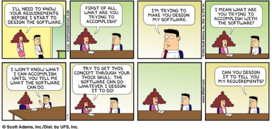

The project was created as a part of the Specification of It Systems course in Department of Engineering at Aarhus University. The document is a requirement specification created in cooperation with Mjølner Informatics A/S company. The specification is based on the SL-07 template made by Soren Lauesen from DTU.
The requirement elicitation process has been carried out through three meetings with the customer from Mjølner. Each one has lasted one hour. The meetings were split into three topics:
During the periods between the meetings, the group has been working on the SRS, so it was continuously improved, and kept up to date.
All deliverables have been submitted to the customer 48 hours in advance of our meetings, so that the customer had a chance to acknowledge with the document, and prepare for the upcoming meeting.
FarmCom is a solution designed to extend an existing, currently functioning system, that enables farmers to access a series of services such as a surveillance of their animals, or monitoring farm information such as a temperature, or a number of animals of particular species. These functionalities are now currently available only inside the farm’s internal network. This means that the farmer is able to use farm's services as long as he is connected to the farm’s internal network.
However, there was a need for enabling the access to all the services from external networks. Wherefore, the customer expected that the supplier would deliver a COTS system that extends the functionality of existing system and enables the access to the services outside of the farm. Simplified, the overall purpose of the system is to forward a HTTP request from the user’s browser all the way to the specific farm's endpoint and return the response back to the browser.
The theoretical solution to this issue might be to just open the port, which enables access to needed services to the outside world, but the customer does not like this solution because it would require massive amount of manual settings on every single farm, and it would be hard to maintain, and control in the future.
As a result, the solution presented in the SRS document has been created.